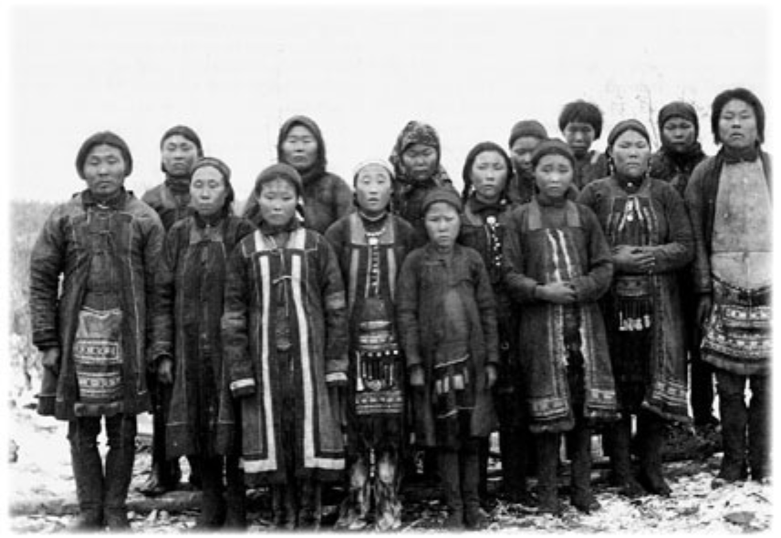

Юкагиры - небольшой коренной народ Северо-Восточной Сибири, проживающий в основном в Якутии и Чукотском автономном округе, известный своим традиционным охотничьим образом жизни и глубоким уважением к арктической природе.
Юкагиры - небольшой коренной народ Северо-Восточной Сибири, проживающий в основном в Якутии и Чукотском автономном округе, известный своим традиционным охотничьим образом жизни и глубоким уважением к арктической природе.
Культура юкагиров сформировалась в условиях сурового арктического климата и базируется на охоте, рыболовстве и сборе, с глубокими традициями устного народного творчества, включающего мифы, легенды и сказания.
Традиционная одежда юкагиров сделана для выживания в экстремальных условиях Арктики и включает в себя теплые меховые костюмы, изготовленные из шкур оленей и других арктических животных.
Традиционный быт юкагиров связан с кочевым или полукочевым образом жизни, адаптированным к охоте и рыболовству в арктической тундре и лесах.
Религиозные представления юкагиров включают шаманизм и поклонение природным духам, с особым уважением к духам охоты и животных.
Литературное наследие юкагиров состоит из богатого устного фольклора, включающего древние песни, мифы и сказания, передаваемые из поколения в поколение, которые отражают их уникальный взгляд на мир и арктическую природу. Современные литературные творения юкагиров также начинают получать признание, привнося в мир рассказы об их культуре и традициях.
|  |